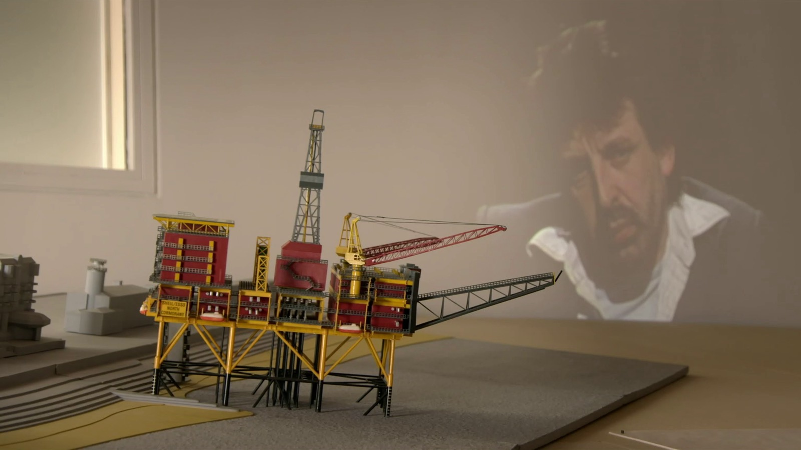

Plannen voor de toekomst: Luc Deleu & T.O.P. Office

Al meer dan vijftig jaar stelt architect, kunstenaar en stedenbouwkundige Luc Deleu de vanzelfsprekendheden van het bouwen ter discussie. In 1970 richt hij T.O.P. Office op, een bureau dat architectuur niet zozeer beschouwt als het ontwerpen van gebouwen, maar als een manier om na te denken over onze leefomgeving. Met provocerende voorstellen voor stadslandbouw, het afschaffen van straatverlichting en het hergebruik van bestaande constructies schopt hij tegen de schenen van het architectuurestablishment. Veel van zijn ideeën blijken vandaag verrassend actueel.
Deleu speelt met schaal, perspectief en de betekenis van alledaagse voorwerpen. Hij legt torens en hoogspanningsmasten op hun kant, bouwt monumentale sculpturen met zeecontainers en stelt voor om een afgedankt boorplatform te gebruiken als wandelpier. Maar achter die speelse ontwerpen schuilt een ernstige vraag: hoe kunnen we onze steden anders organiseren? In projecten als De Onaangepaste Stad en Orban Space verschuift zijn aandacht steeds meer naar de publieke ruimte en de voorzieningen die een stad leefbaar maken.
Plannen voor de toekomst laat Luc Deleu zelf terugblikken op zijn eigenzinnige parcours, aangevuld met archiefbeelden en gesprekken met medewerkers en bewonderaars. Van zijn eerste provocaties tot het ontwerplaboratorium Darling Springs ontvouwt zich een opmerkelijk consequent oeuvre, waarin experiment en maatschappijkritiek hand in hand gaan. De documentaire toont een architect die weigert zich neer te leggen bij het louter economische denken achter het bouwen en die blijft geloven in de kracht van de verbeelding. Want zoals Deleu zelf zegt: architectuur is spelen.
“Een indringend portret van de plaaggeest van de Vlaamse architectuurwereld”
- Productie
- CRIT. architects
- Regie
- Bertrand Lafontaine, Steffen Verpoorten
- Montage
- Steffen Verpoorten, Michael Lombarts
- Camera
- Jens Van Isacker, Michael Lombarts
- Grafiek
- Michael Lombarts
- Color grading en audiomix
- Karel Vangrimde
- Setdressing en camera-assistentie
- Céline Gladiné
- CIVA Brussel · 09–10.07.2021
- AFFR Rotterdam · 09.10.2021